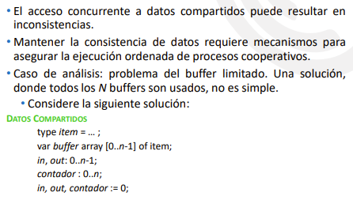

Fundamentos
● El Problema de la Sección Crítica
● Solución a la sección crítica para 2 procesos (Algoritmo de Peterson) y para n procesos (Algoritmo del Panadero)
● Soluciones por Hardware
● Soluciones por Software
o Locks
o Semáforos
o Monitores
● Problemas Clásicos
